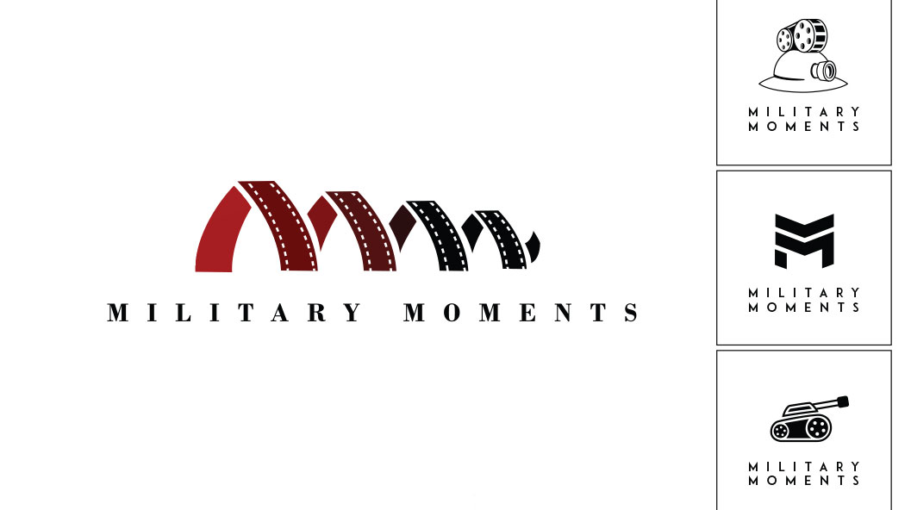
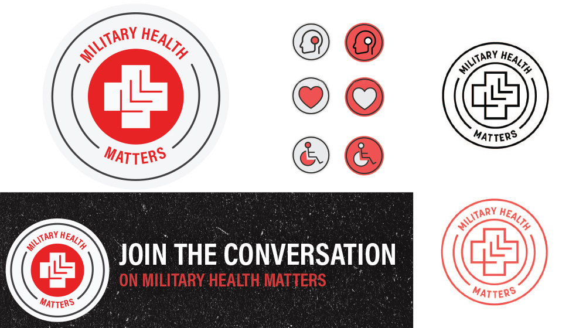
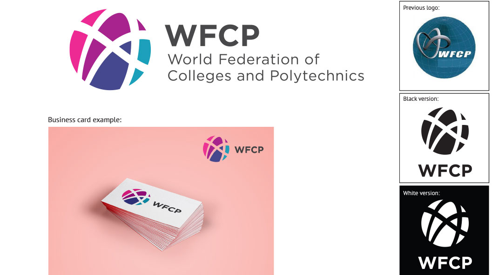
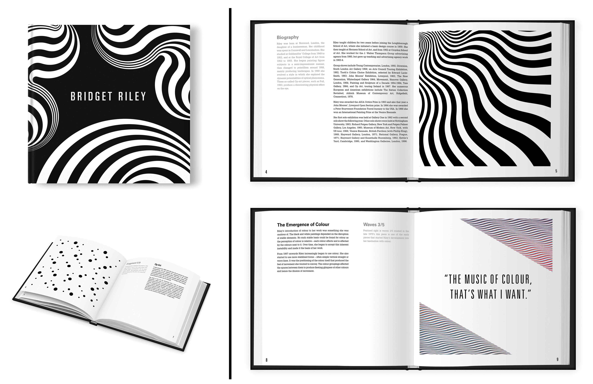

Julia Paddick
Graphic Designer · Professional Creative

Military Moments Logo
This logo was created for a new web series, Military Moments, developed by Legion Magazine. A selection of logos was created and developed for motion graphics.
The final logo was chosen for it’s mixture of the series initials, MM, and film reels as well as the
sense of traditional style. The series has since grown substantially and been narrated by Canadians
such as Gordon Pinsent, David Suzuki, William Shatner, and Mike Myers. Playlist available here.
Previous Project
Next Project
O Canada: Our Journey to 150
Working alongside writers, script editors, and another video specialist, I helped to produce visuals and motion graphics for this project including the intro and credits, montages and transitions, and typographic scenes. View full video here.
Previous Project
Next Project
CICan Fact Sheets
Fact sheets created for Colleges and Institutes Canada using original iconography, maps, and graphics to make a clean design that supports CICan's brand.
Previous Project
Next Project

Military Matters
Military Health Matters was a weekly e-report dedicated to military and veterans’ health issues. The logo was created to reflect a military patch and combine modern design approaches. Social media graphics, icons and one-colour versions were also made to support the campaign. Within several months the subscriber base was steadily increased every week to over 15,000 subscribers across North America.
Previous Project
Next Project
Anisha's Restaurant Logo
Anisha's is a fresh new restaurant in Ottawa that features casual Indian dishes with a twist. The logo was designed with the intent to convey an inviting, authentic, and flavourful Indian restaurant. Several options were produced and the chosen logo was inspired by brush strokes of ancient Sanskrit writing mixed with modern script styles. A mandala ornament was also produced as a secondary element for styling use.
Previous Project
Next Project

WFCP Logo Refresh
The World Federation of Colleges and Polytechnics (WFCP) is an international network of colleges and national and regional associations of colleges.
The goal of this project was to redesign the logo for the World Federation of Colleges and
Polytechnics. The new look was intended to contain elements of the previous logo but modernize
it’s appearance. The new logo has greatly increased branding abilities and stands out from other
organizations in the field. It is displayed throughout the world for many international conferences.
Previous Project
Next Project
The Talented Mr. Ripley Poster
After recently watching this 1999 movie I was inspired to create a poster that captures the story with thoughtful minimalism and plays with negative space. The typewriter font, piano keys, and oar are all symbols woven from the dark plot of this film.
Previous Project
Next Project

Bridget Riley Art Book
Bridget Riley is one of my favourite op artists and designers for her incredible breakthroughs and experiments with visual understanding. This book was dedicated to her work and styled with appreciation of her accomplishments.
Previous Project
Next Project
Who's Open? App Prototype Design
Who’s Open? is an iOS app concept that helps you find restaurants that are not only nearby but
also open right now. In a single step you will be shown a list of restaurants that are currently open and
organized by proximity to you. Who’s Open? eliminates the hassle and time it would take to check each
restaurant’s hours individually by filtering out closed restaurants completely.
Previous Project
Next Project
Cold Comfort Web Feature
Seventy-five years ago, two U.S. ships ran aground in a storm and were pounded apart on the rocky shores of Newfoundland’s Burin Peninsula on a winter night. Sailors struggled to leave their sinking vessels while local people risked their own lives to save them.
Awarded Gold at the 2017 Canadian Online Publishing Awards (COPA) for Best Interactive Story.
Cold Comfort is an interactive longform journalism feature that includes audio, historic photographs, video, and styling to complement the narrative. Enter site here.
Previous Project
Next Project